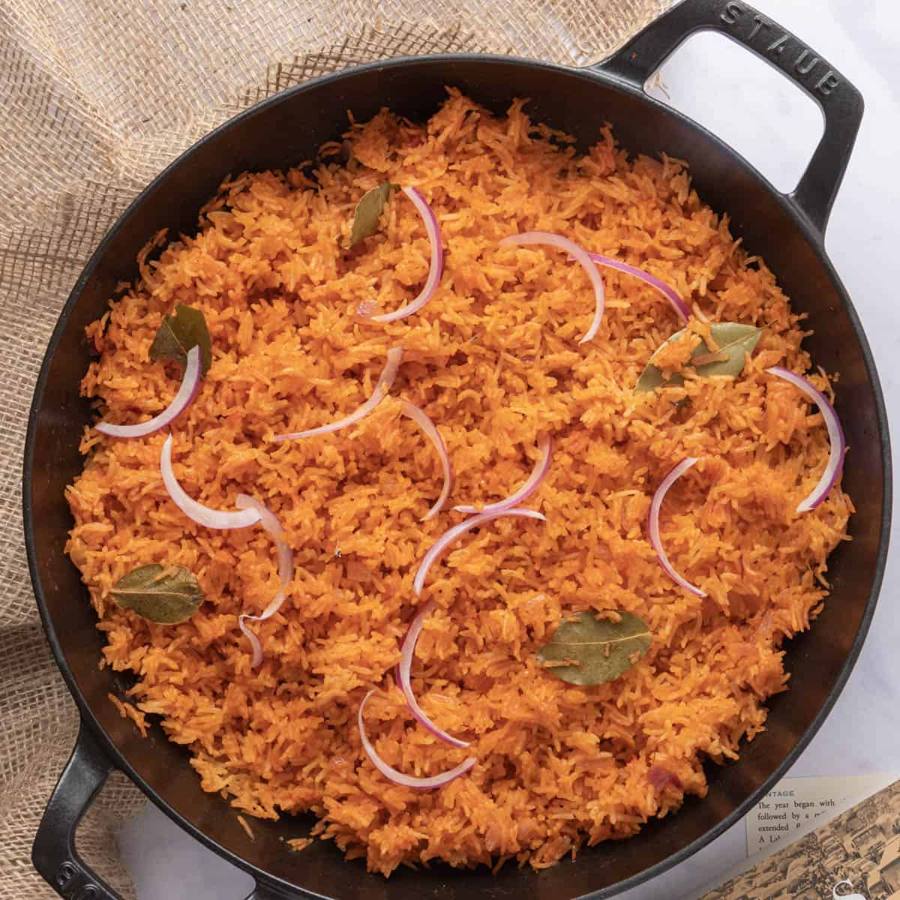

Jollof rice

Description
Rice, Ororo, Leaves, e.t.c
Ingredients
Steps
- Rinse your measured rice thoroughly
- Then "waa" inside the pot
- Wait after 5 mikes for you to cut some onions in
- Then allow to coook after puttting maggi or knorr in, and your meat of course